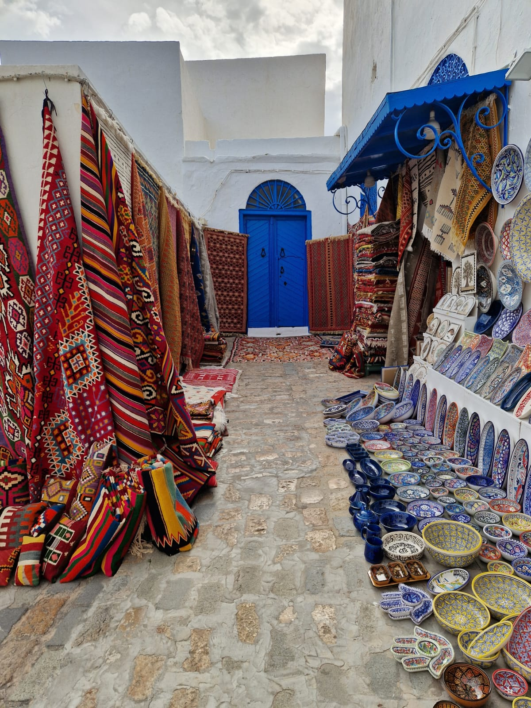
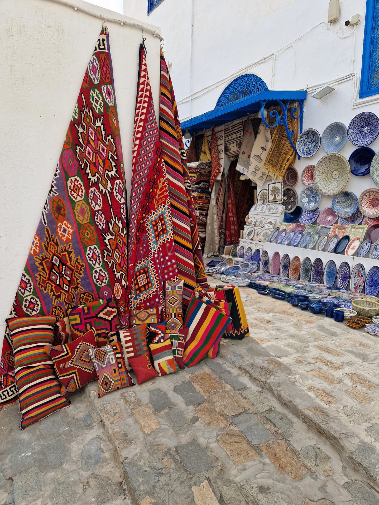
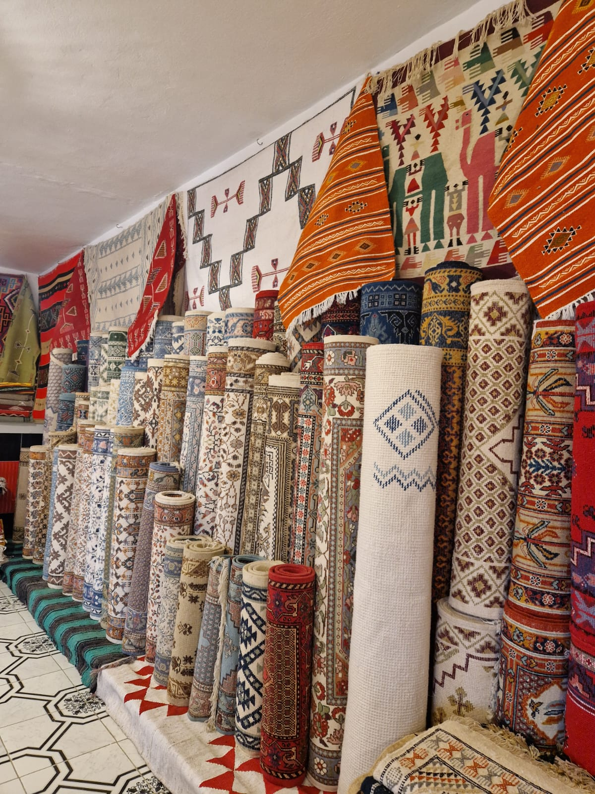

Atelier de Kairouan · Depuis 1994
Le Margoum prend forme dans le bois.
Fauteuils et chaises façonnés à la main, habillés de tissage margoum authentique — où l'artisanat textile tunisien rencontre l'ébénisterie traditionnelle.





La collection
Quatre familles, un même fil

Fauteuils & canapés
Structures en bois massif, coussins et assises habillés de tissage margoum authentique. Le confort du salon, la mémoire du métier à tisser.
Voir le catalogue
Chaises
Pieds tournés en bois clair, dossiers et assises tissés main — chaque chaise porte un motif margoum différent, jamais deux identiques.
Voir le catalogue
Chaises rondes
Une silhouette signature à dossier enveloppant, pensée comme une pièce d'accent — le margoum en majesté dans un coin de pièce.
Voir le catalogue
Poufs & assises basses
Pour le salon comme pour la terrasse — des poufs souples entièrement recouverts de margoum, faciles à déplacer, impossibles à ignorer.
Voir le catalogueNotre savoir-faire
Du bois brut au fauteuil fini
Le bois
Sélection de bois massif — noyer, chêne, olivier — séché naturellement puis découpé à la main par nos ébénistes.
Le tissage
Sur métier vertical, nos artisanes tissent le margoum motif par motif, fil après fil, selon des dessins transmis de génération en génération.
L'assemblage
Le tissage est tendu et fixé à la structure en bois, à la main, sans clous apparents — une technique propre à l'atelier.
La finition
Ponçage, huilage naturel du bois et contrôle qualité pièce par pièce avant expédition.
Sur-mesure & contact
Composez votre pièce
Choisissez l'essence de bois et le motif margoum — nous façonnons la pièce sur-mesure.
Atelier
Avenue Habib Bourguiba, Kairouan, Tunisie
Téléphone
+216 XX XXX XXX
contact@margoum-tunisia.tn
Horaires
Lun – Sam · 9h00 – 18h00